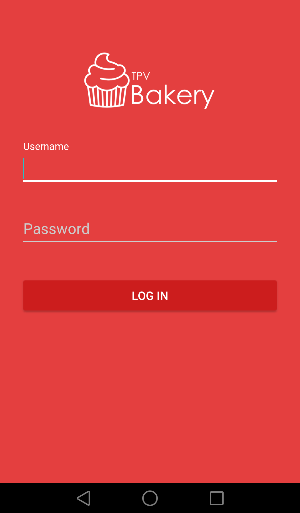

Bakery TPV
BakeryTPV es una aplicación desarrollada en Android, una herramienta para
gestionar las ventas de un establecimiento.
En ella se crean tickets con su respectivo número de mesa, este se puede
modificar en cualquier momento, se le puede añadir ofertas o productos y
además se puede modificar el precio final del ticket con una calculadora.
